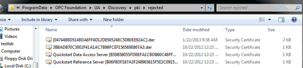
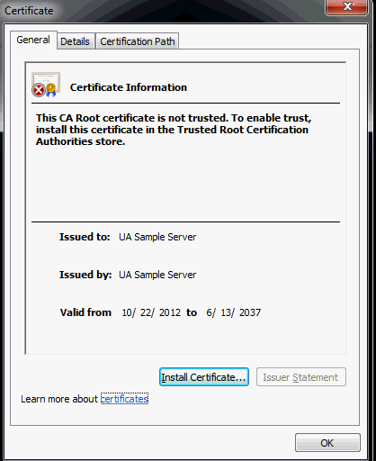

OPC UA Local Discovery Server 1.02
OPC UA Local Discovery Server 1.02
OPC UA Local Discovery Server 1.02
Trusting an application is a straightforward process, but determining the server name from a certificate whose filename is an “ID” leads to some confusion, as shown below:

In the above screen-shot there are two different methods of certificate filename:
Certificate with the Server name and the unique Id (e.g. QuickStart Data Access Server [B59….].der)
Certificate with the unique Id (e.g. [047448….].der)
To identify the Certificate, simply double click on it (Windows) to view the certificate details:
